模块简介
这里是每个人默认登录跳转到的界面，这个页面主要是提供给艺术家查看自己任务安排、反馈和计划等相关数据。
页面预览
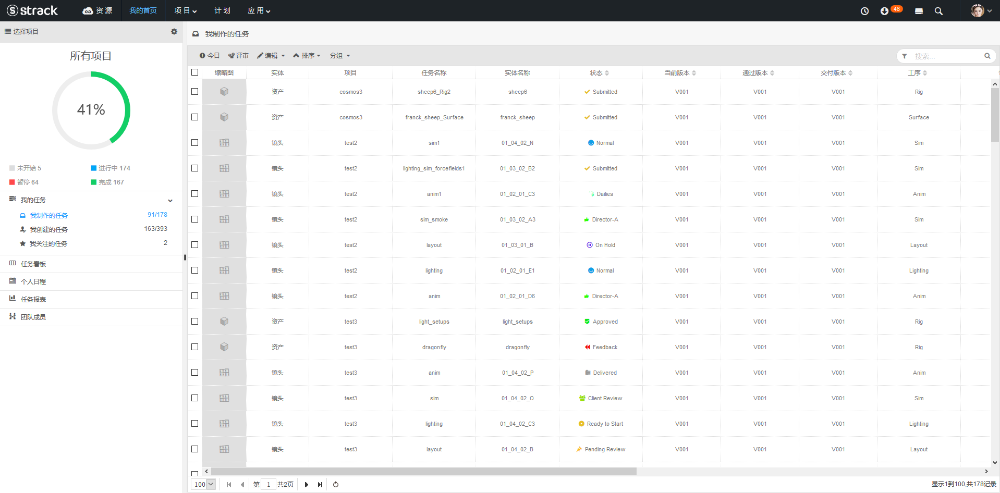
选择或切换项目
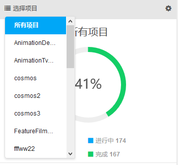
页面偏好设置
设置当前页面默认显示项目和默认显示页面，打开当前页面缓存。
注意：当打开页面缓存后，缓存优先级高于偏好设置。
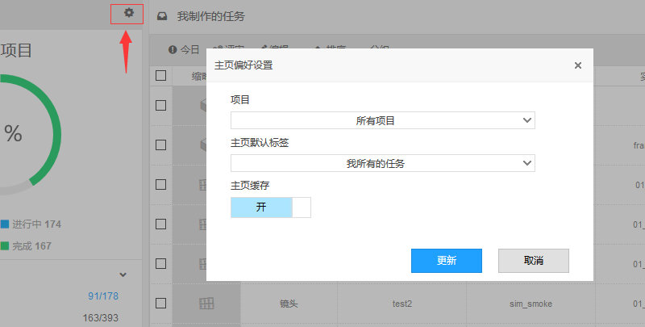
项目统计图
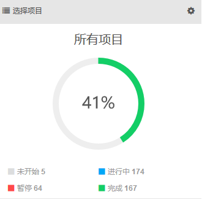
我的任务
这个页面管理三个维度与我相关的任务。分给我的制作任务，我创建的制作任务和我关注的制作任务。
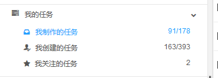
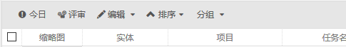
1. 工具栏按钮--今日
点击今日按钮能快速过滤出我制作的任务或者我创建的任务中今天应该完成的任务有哪些。
2. 工具栏按钮--评审
点击评审按钮能快速过滤出我制作的任务或者我创建的任务中今天提交daily的任务有哪些。
3. 分配任务
点击 编辑->分配，很多情况下任务创建都是由制片或者协调创建，然后直接分给了部门组长。这时候部门组长需要把任务分给到具体的某个人进行制作。
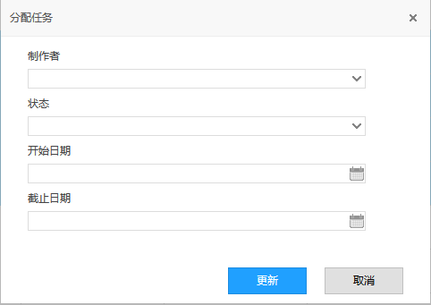
4. 复制任务
点击 编辑->复制任务，只能选择一个任务进行复制操作。可以选择把这个任务拆分给多个人、多个环节，设置其对应初始状态。
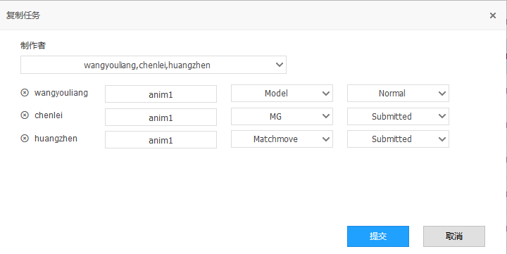
5. 批量编辑字段
点击 编辑->更新任务，选择一个或者多个任务进行批量编辑。可以选择一个或者多个字段进行编辑修改。
注意：这个功能是全局通用功能。在我的主页所选择的字段只能是同一个项目的。
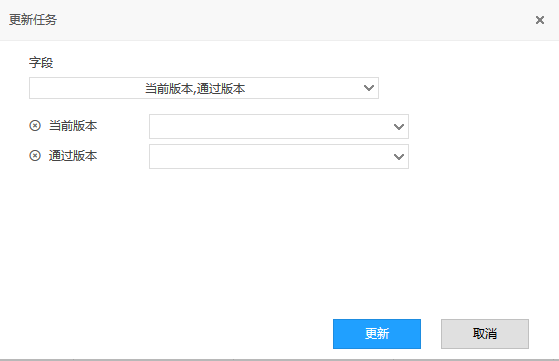
6. 导出Excel
详情参考Excel章节，根据当前页面过滤条件导出Excel，点击 编辑->导出Excel
7. 移入回车站
删除选择一个或者多个版本。
8. 排序、分组
任务看板
这个页面以甬道的形式来快速管理个人任务，根据状态的五大分类进行区域划分，分别为未开始、进行中、评审、完成和暂停。
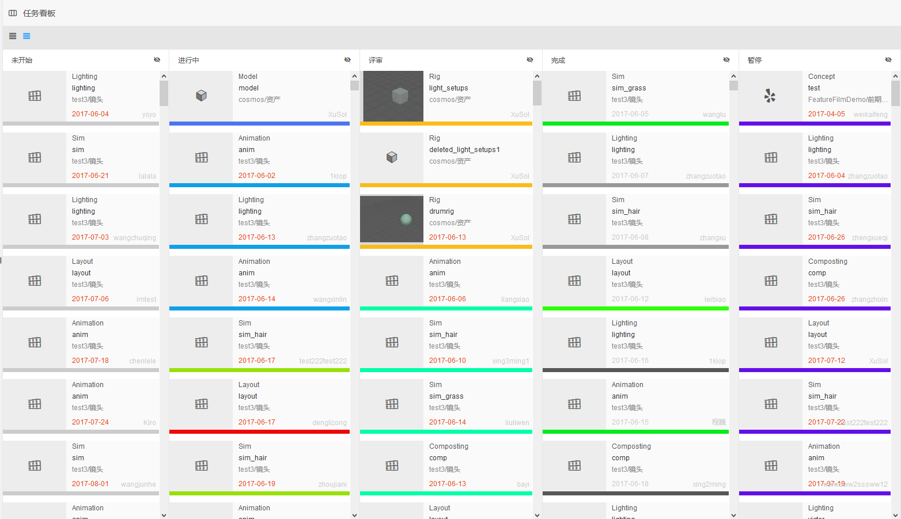
1. 视图显示大小调整
点击工具栏可以切换任务项显示大小。
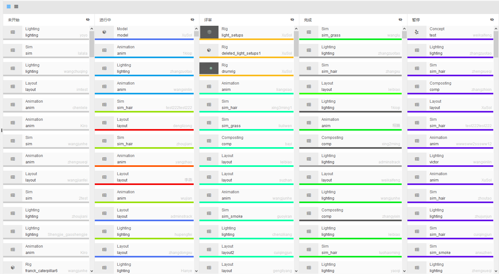
2. 拖拽快速改变当前任务状态
鼠标拖拽一个任务
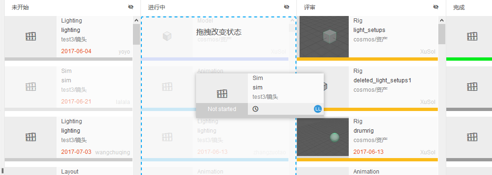
释放鼠标拖拽
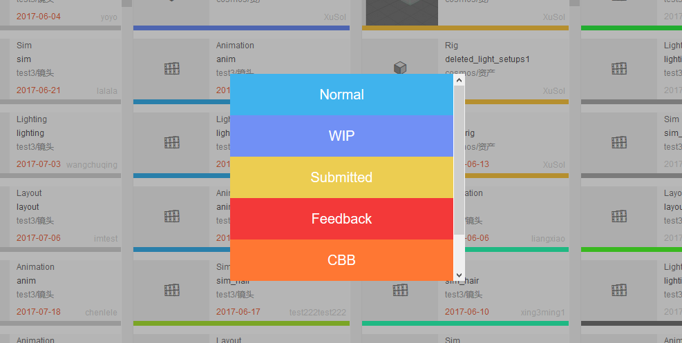
点击选择一个状态当前任务移入当前甬道，否则点击空白取消操作
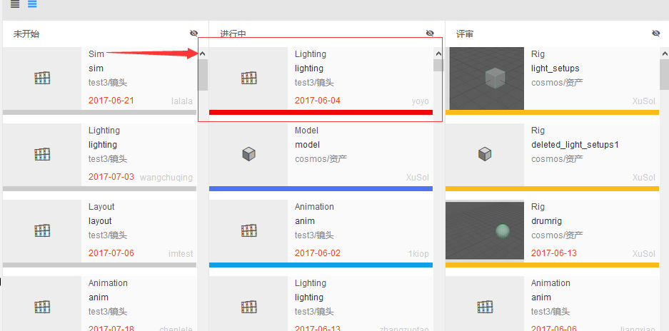
3. 关闭展开甬道
点击甬道上面的小眼睛图标进行甬道关闭展开切换。
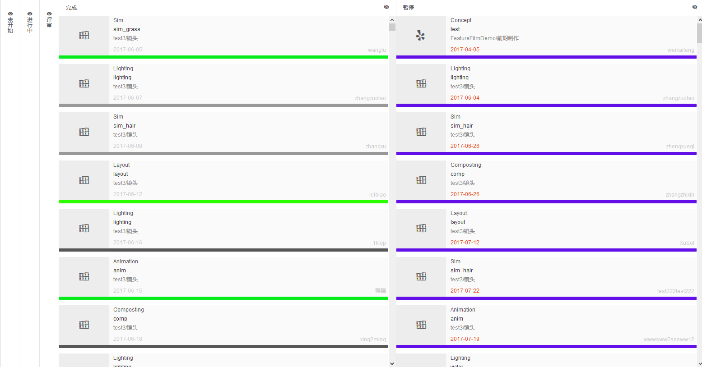
个人日程
个人日程主要显示两大内容，一个是制片在计划模块中添加的与我相关的事项，二是显示我自己添加的备忘事项。

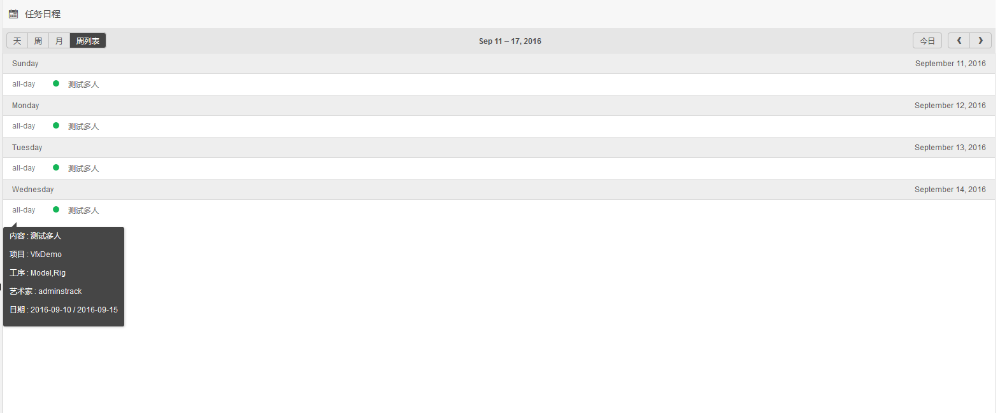
1. 添加个人备忘事项
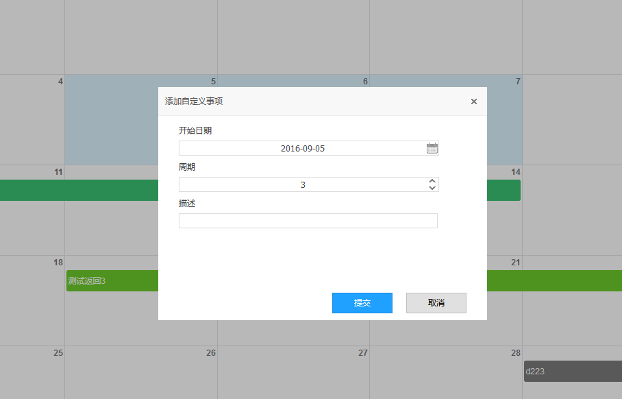
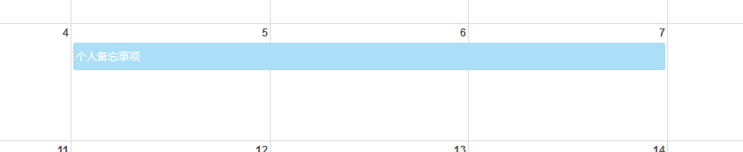
个人添加的备忘事项为淡蓝色显示条
2. 编辑个人备忘事项
双击个人备忘事项，或者拖拽移动事项，或者拖拽事项尾部来修改当前选择的个人备忘事项。
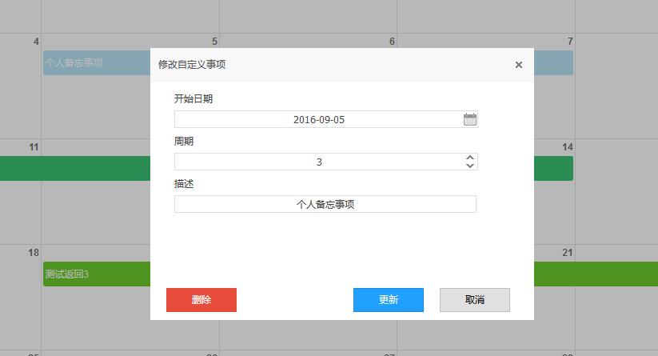
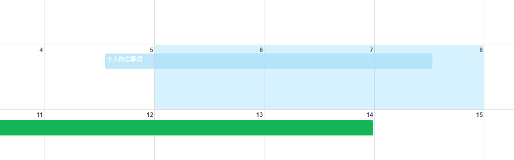
任务报表
这里简单统计个人任务数据，主要分任务状态统计显示饼状图，显示个人这一周活跃程度。
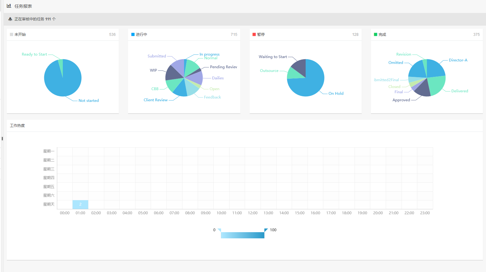
团队成员
和我在同一个项目的人，或者任务相关连上下游的人。
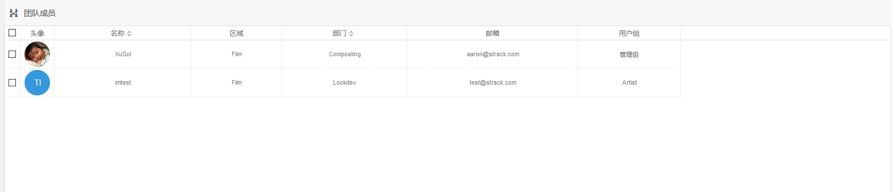